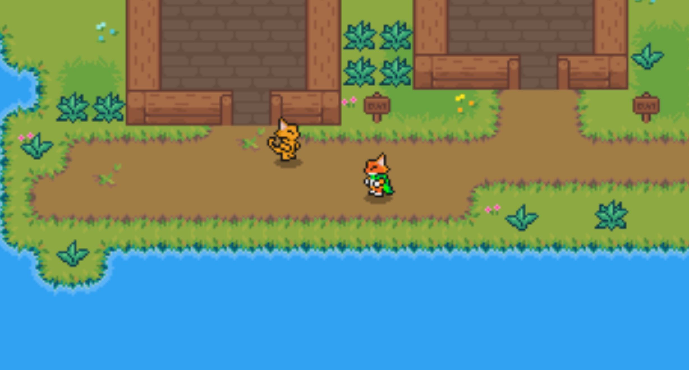

My game comes from all sorts of inspiration. One of the biggest being the call of duty zombies series. I like the wave/round survival aspect and want to implement it.
Another concept I enjoy is multiplayer. Nohting makes a game more fun or sometimes frustraighting than playing with others. My goal is to make this game a round survival multiplayer game.

The development process so far has been kind of rough. For starters, I am very inefficent at animation. I can code for hours but to animate millions of frames just always sounds like an awful time.
I have managed to code many things so far. I have player movement, camera movement to follow the player. The player can attack, dodgeroll, and interact with npcs. I set up a branching dialouge system
that players can use when interacting. Collisionis are all set up and the ability to move betweeen rooms. Some objects can even be destroyed and leave behind temorary particles.